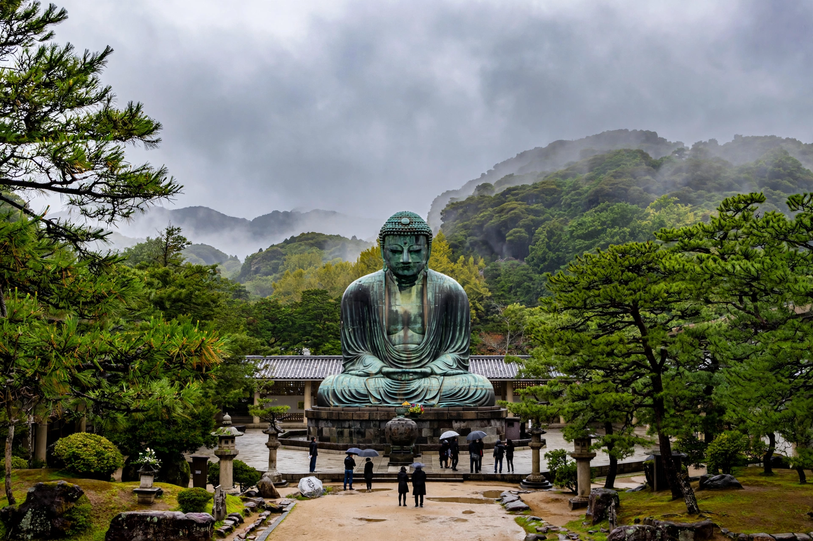

Minamoto no Yoritomo

Portrait of Minamoto no Yoritomo in court dress, from a later copy of a Kamakura-era painting
Minamoto no Yoritomo (9 May 1147 – 9 February 1199) was the founder and first shogun of the Kamakura shogunate of Japan. Exiled to Izu as a boy after his father's defeat in the Heiji Rebellion (1160) — spared when Taira no Kiyomori heeded his stepmother's plea — he raised the Minamoto standard in 1180 and, through the Genpei War won largely by his half-brothers Noriyori and the brilliant, doomed Yoshitsune, destroyed the Taira (1185). Establishing his military government (bakufu) at Kamakura, appointing stewards (jitō) and military governors (shugo) across the provinces, and receiving the title sei-i taishōgun in 1192, he founded the warrior rule that governed Japan, in evolving forms, until 1868.
Rise and the Genpei War
Yoritomo's genius was organisational and political rather than tactical: from Izu he married into the Hōjō, built a vassal band bound by land confirmations, and let his brothers fight the war — Yoshitsune's victories at Ichi-no-Tani, Yashima and Dan-no-ura becoming legend. Victory made Yoritomo suspicious: he hounded Yoshitsune, who had accepted court rank without permission, to his death at Hiraizumi (1189), and purged Noriyori too. The court at Kyoto, unable to refuse his demands, sanctioned his nationwide network of stewards — the institutional wedge of dual government.
Rule and death
From Kamakura Yoritomo built a feudal state: his gokenin vassals, the samurai-dokoro and monchūjo boards, and a code later formalised in the Jōei Shikimoku (1232). He died in 1199 — from a fall from his horse, by the common account, possibly after illness at a bridge-opening ceremony — leaving minor sons (Yoriie, Sanetomo, both later assassinated) and real power to his widow Masako and the Hōjō regents. His equestrian tomb and the Kamakura he founded remain the symbols of the warrior age he began.